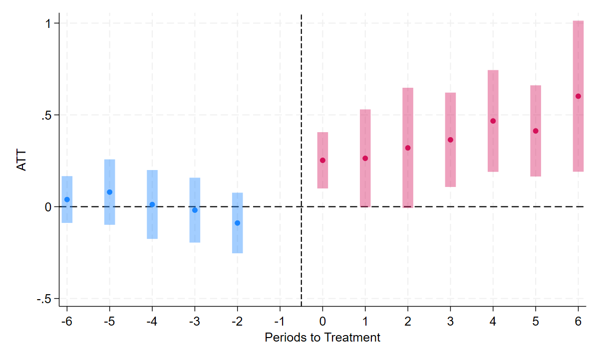
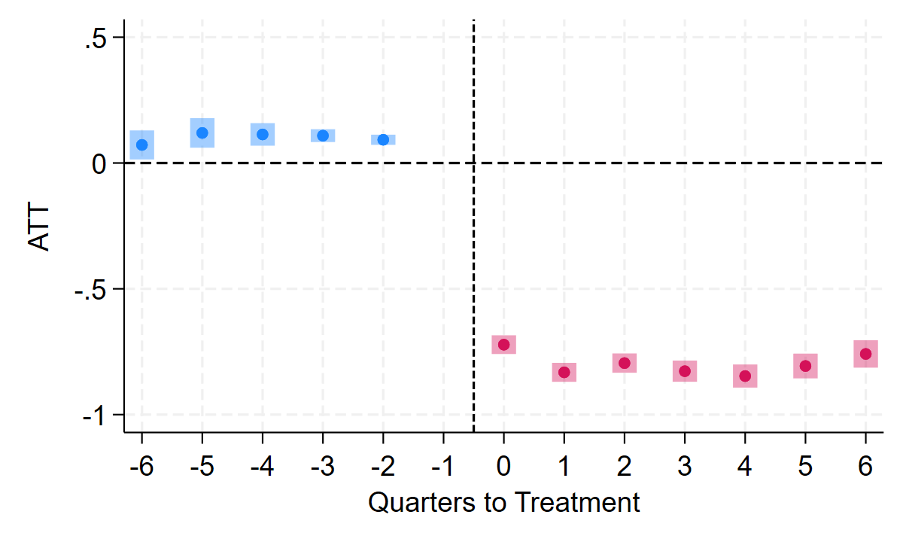
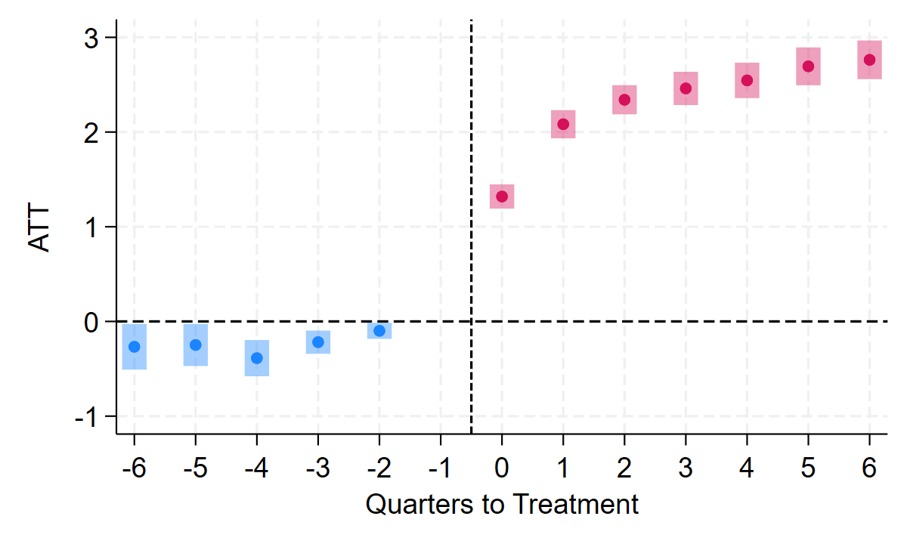

Difference-in-differences when a change reaches different places at different times: which comparisons are fair, why the one-number regression can mislead, and what to use instead
Why changes roll out in waves; which comparisons are fair and which are forbidden; why the one-number regression can mislead when effects grow or differ by wave; what the Callaway–Sant'Anna approach does, in words; how to read an event study from a staggered rollout. No formulas.
outcome = (a separate constant for each unit) + (a separate constant for each period) + β × (treated, and the change has started)
Each wave is a small difference-in-differences of its own. The question of this module: what happens when we pool them all into one regression?
If you must roll out gradually anyway, randomize the order. A staggered rollout with a random order is an experiment, for free.
Xia & Zheng, "Seeing Innovation: Green Plate Policy and Electric Vehicle Adoption," working paper.
Barwick, Swanson & Xia, "A Double Dose of Reform: Insurance and Centralized Negotiation in Drug Markets," NBER Working Paper 33832; summarized in the NBER Digest, September 2025.
You rarely know this in advance, which is why the modern tools in Part 4 are now the default.
A simulated panel shaped like the rollout (the real sales data are licensed): 300 cities, 48 months; the effect on log EV sales starts at 0.2 and grows for eight months. Because we made up the data, we know the truth.
1. One wave, one month at a time. Take the cities that adopted in, say, December 2017, and one month after that, say March 2018. Compare their change since November 2017 (the month before they adopted) with the change of cities not yet treated in March 2018 (or never treated). That is one clean 2×2: a "building block".
2. Repeat for every wave and every month after it started. Already-treated cities never serve as a comparison.
3. Average the building blocks the way you want, with weights you can state:
Months before adoption, computed the same way, give the event study's left side: a check on parallel trends.
| Callaway & Sant'Anna | each wave vs. not-yet-treated (or never-treated) units; average the building blocks |
| Imputation (Borusyak, Jaravel & Spiess) | learn the untreated trend from untreated observations only; predict what treated units would have done; average the gaps |
| Sun & Abraham | an event study run separately for each wave, then averaged |
| Stacked DiD | one clean dataset per wave (the wave plus units not treated around it), stacked into one regression |
did in R, csdid in Stata, and Python ports. The Python cell later in this part does it by hand in a few lines.
Xia & Zheng, "Seeing Innovation: Green Plate Policy and Electric Vehicle Adoption," working paper.


Barwick, Swanson & Xia, NBER Working Paper 33832; NBER Digest, September 2025, "China's Expansion of Drug Insurance Increased Access While Containing Costs."
Your turn: use only never-treated cities as comparisons (fair = ~np.isfinite(g)). Same answer? Why are there only 12 such cities?
| Rollouts | Most changes reach units at different dates. Each wave is its own difference-in-differences; waves still waiting are natural comparisons. If you control the order, randomize it. |
| Fair vs. forbidden | Fair comparisons use units not yet (or never) treated. Units treated earlier are forbidden: their outcomes are already moved by the treatment. |
| The trap | The one-number regression mixes in forbidden comparisons. When effects build up, fade, or differ by wave, it can be far too small or have the wrong sign. |
| The fix | Callaway–Sant'Anna and its relatives: only fair building blocks, averaged into an event study, by wave, or overall. |
| Two studies | Green plates: EV sales build up to about +60%. Drug negotiations: prices fall at once, quantities build up more than tenfold. In both, the fair comparisons run out late in the rollout. |
The two-wave example, the simulated green-plate rollout: the one-number regression, fair comparisons by hand, the event study, and an exercise with never-treated cities only.
In Colab: File → Save a copy in Drive to keep your own version.
Baker, Larcker & Wang (2022), "How Much Should We Trust Staggered Difference-in-Differences Estimates?" Journal of Financial Economics (a readable start); Callaway & Sant'Anna (2021), Journal of Econometrics; Roth, Sant'Anna, Bilinski & Poe (2023), "What's Trending in Difference-in-Differences?" Journal of Econometrics.
Thanks to Paul Ellickson and Eric Zou for sharing their teaching materials, and to my coauthors Jinyang Zheng, Panle Jia Barwick, and Ashley Swanson.